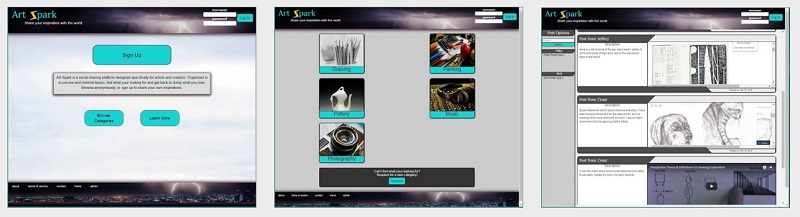

Art Spark
Art Spark is a personal project that I made during my time at RefactorU. It is a prototype for a social sharing web app. I am still working on it, so it is not fully functional yet. The overall goal of the site is not to be a popular social app with a steady user base, but to be more of testing ground for me to try out and learn new aspects of web development in a practical environment.
Rayce Gravity
Rayce Gravity is a small startup bussiness that converts downhill mountain bikes into ski-bikes to be rideable all year long. I was contracted to build a basic website for them. It is an easy to follow, one page application that details their companies goals and what they offer currently.
Casino Craps Simulator
This is another project that I worked on during RefactorU. It is a one page application that simulates playing the popular casino game of craps. All the dynamic features of the application are done using angular.
AppVenture
I have been givin the great opportunity to be a collaborator on this awesome new project. More to come soon!